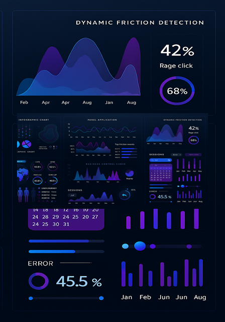
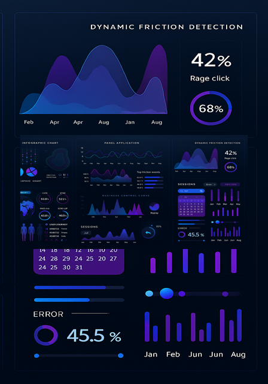

UserFlow360: GDPR-Compliant Session Intelligence
UX clarity meets transformation readiness. Replay sessions, detect friction, and align behavior with strategy – directly from your infrastructure.
 

UX clarity meets transformation readiness. Replay sessions, detect friction, and align behavior with strategy – directly from your infrastructure.